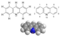

acridine

Definition: Acridine is an organic compound and a nitrogen heterocycle with the formula C13H9N. Acridines are substituted derivatives of the parent ring. It is a planar molecule that is structurally related to anthracene with one of the central CH groups replaced by nitrogen. Like the related molecules pyridine and quinoline, acridine is mildly basic. It is an almost colorless solid, which crystallizes in needles. There are few commercial applications of acridines; at one time acridine dyes were popular, but they are now relegated to niche applications, such as with acridine orange. The name is a reference to the acrid odour and acrid skin-irritating effect of the compound.
Source: Wikipedia
Wikipedia Page
Wikidata Page